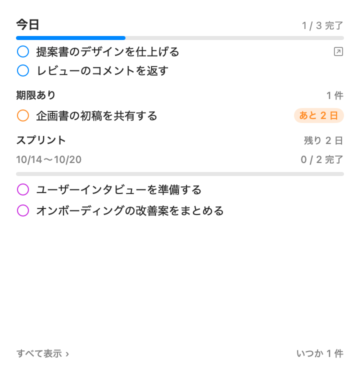
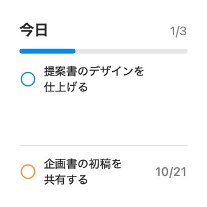
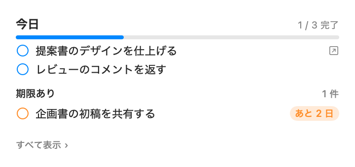

今日
今日の終わりまで
今日中に終えること。ウィジェットのいちばん上に、進捗バーと一緒に出ます。
v0.2.0日報・浮かぶ入力パネル・Claude との連携が入りました
ウィジェットで今日のタスクを見て、思いついたら ⌃⌥Space ですぐ入れる。進んだことはコメントで日々積み上げ、整理は Claude に MCP で任せられる。Mac のための、個人用タスク管理アプリです。



TASK TYPES
タスクには 4 つのタイプがあります。タイプを選ぶだけで期限が決まるので、日付を入れる手間も、並べ替えに迷う時間もいりません。
今日の終わりまで
今日中に終えること。ウィジェットのいちばん上に、進捗バーと一緒に出ます。
日付と時刻を指定
締め切りがあること。「あと 2 日」「期限切れ」のバッジで迫り具合が分かります。
今のスプリントの最終日まで
今週中くらいに終えること。区切りは水曜開始の 1 週間が既定で、変えられます。
期限なし
いつかやること。ウィジェットでは件数だけを控えめに出します。
1入れる
どのアプリを使っていても、手を止めずにタスクを入れられます。入れたタスクはすぐにウィジェットと一覧に現れます。
どこからでも ⌃⌥Space。画面に入力パネルが浮かび、Return で追加して閉じます。作業中のアプリはそのまま。
一覧ウィンドウの上に、いつも入力欄があります。Return で続けて追加でき、右のピルでタイプを選べます。
メールやチャットの文字を選んで、右クリック →「引き出しにタスクを追加」。1 行目がタイトル、残りがメモ、URL はリンクになります。
2見る
ウィジェットは 3 サイズ。今日の進捗と期限をいつも見えるところに置いて、その場で完了チェックできます。
行の丸をクリックするとその場で完了。タイトルをクリックすると本体で開きます。
本体や Claude が書き込むと、数百ミリ秒でウィジェットが描き直されます。
Notion や Jira のリンクが付いたタスクは、ウィジェットから直接開けます。
3積み上げる
タスクには、あなたも Claude もコメントを残せます。「日報」に切り替えると、全タスクのコメントと完了が日付ごとに並び、そのまま Markdown で日報や週報に貼れます。
4任せる
アプリの中に AI はいません。MCP サーバーとしてタスクの操作を公開し、Claude Code や Claude Desktop から呼び出します。Jira の課題を閉じたら対応するタスクも完了に、といった連携もできます。
list_taskscreate_taskupdate_taskcomplete_taskadd_commentget_journaladd_linkarchive_task
平日の 9:30 と 17:30 など、決めた時刻に「タスクを見直しましょう」と通知。通知から更新用の指示をコピーして、Claude にそのまま貼れます。
同じ時刻に Claude Code を裏で動かし、Jira の状態を見てタスクを揃える設定も、コマンドひとつで登録できます。
Claude の変更は操作履歴に差分つきで残り、ワンクリックで戻せます。削除はすべて論理削除です。
DOWNLOAD
公開 10/25(日) · リリースノート
SHA-256: 3649731013b09e80b288a1b0b0c2863233b678ef58badc63f828722df3fecd67
$ claude mcp add --scope user hikidashi -- \
/Applications/Hikidashi.app/Contents/Helpers/TaskMCP